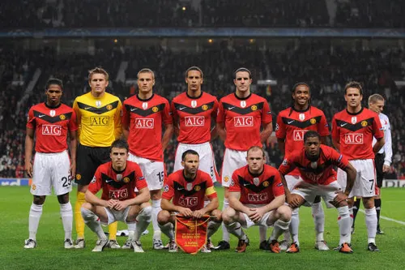

Welcome to the Red Devils
Fans call the stadium the Theatre of Dreams
, and the club has won
a record 20 English league titles.

Fans call the stadium the Theatre of Dreams
, and the club has won
a record 20 English league titles.
